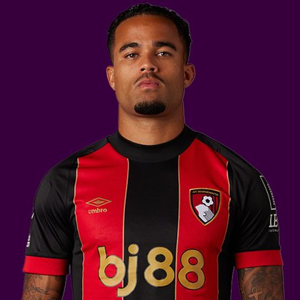

PITCHKEEP
Premier League ranks
Player File · MID BOU · Premier #159

Justin Kluivert
MID · Bournemouth · age 27 · £5.9m
2025/26 Premier League
| Year | Starts | Min | G | A | xG | xA | CS | GC | Bonus | YC | Sleeper | FPL |
|---|---|---|---|---|---|---|---|---|---|---|---|---|
| 2025/26 | 8 | 586 | 2 | 2 | 2.27 | 0.54 | 6 | 3 | 2 | 1 | 40.8 | 40 |
Plus
- 40.8 Sleeper BPL 2025 points (Pitch #98).
- Penalty order #2.
- Corners order #4.
Minus
- 100% chance of playing.
- Consensus 145.33 vs Sleeper #98 - the industry is cooler than last year's box score.
- Board spread 19-155 (FPL EP Next to RotoWire GW1).
PitchKeep Take · The Premier
Justin Kluivert is a midfielder for Bournemouth, age 27, £5.9m. The Premier ranks him 159th overall by splitting Sleeper BPL 2025 (#98, 40.8 points) with the consensus of 3 other boards (145.33). Last year's Sleeper line ran 47 spots ahead of the expert/FPL mix. The third list keeps some of that production bump and refuses to throw the other boards out. That is the whole point of not just republishing The Pitch.
The 2025/26 Premier League line is 8 starts and 586 minutes, 2 goals and 2 assists, 4 tackles and 7 CBI. Official FPL scored it at 40 points (4.4 per match) with 2 bonus. Sleeper's table turned the same counting stats into 40.8. Midfielders get 9 a goal, 6 an assist, and 1 a clean sheet, plus a full tackle/CBI stream. That is why a six who plays every week can outrank a ten-goal winger who sits.
Underlying: 2.27 xG, 0.54 xA, 2.81 xGI. Set pieces: penalty order #2, corners order #4, direct free-kick order #2 for Bournemouth. Role at Bournemouth is the 2026/27 question sitting under the 2025/26 number. 8 starts is a starter. Anything under 25 starts is a rotation warning we already priced. Minutes are the skill that survives a finishing regression. The friendliest board is FPL EP Next at 19; the coldest is RotoWire GW1 at 155.
Market: £5.9m, 11 boards on the file. Price is the FPL tax, not the rank. The Premier is who produced and who the boards still believe. FPL's own EP-next is 6.0. ICT 50.0.
Instruction: he is on the 400, which is already a statement, and he is not a star. Stash in Sleeper if the minutes are real. Do not let a Pitch screenshot make you start him over a Premier top-80. FPL flag: 100% chance of playing. Nearby on The Premier: Nick Woltemade, Van de Ven, Julio Enciso. Versus The Pitch (Sleeper-only #98), the hybrid moves him down to #159. That move is the third list doing its job.
He is 27, which on this board is neither a dart nor a warning label. Prime-age midfielders get ranked on what they just did and whether Bournemouth still gives them the ball. 586 minutes says yes. The 2026/27 FPL price (£5.9m) is the app's guess at whether that continues. The Premier is the blend of that guess and the box score.
How to use the file: The Pitch is the Sleeper-only 400 (he is #98 there). The Premier is the 50/50 with every other board we track. Attack, Midfield, Defence, and Keepers re-rank the same Sleeper table by position. BK Value on this page follows The Premier when you are on the hybrid calculator and The Pitch when you are on the Sleeper calculator. Same curve either way - 12,000 at 1.01.
Sleeper vs FPL
Same 2025/26 line, two scoring tables
Board graph
Spread 19-155 · 11 sources
Tape · 2025/26 Premier League
Kluivert Hat-Trick Stuns Magpies 🍒 | Newcastle 1-4 Bournemouth | Premier League Highlights
Every Board
Spread 19-155 · 11 sources
| Source | Rank |
|---|---|
| FPL EP Next | 19 |
| FPL Form | 19 |
| FPL ICT Index | 57 |
| FPL xGI | 59 |
| FPL 2025/26 Points | 74 |
| FPL Price Board | 78 |
| Sleeper BPL 2025 | 98 |
| RotoWire Fantrax / Sleeper 400 | 132 |
| RotoWire FPL 400 | 149 |
| FPL Ownership | 152 |
| RotoWire GW1 | 155 |
All players · The Premier · The Pitch · PK News · Calculator